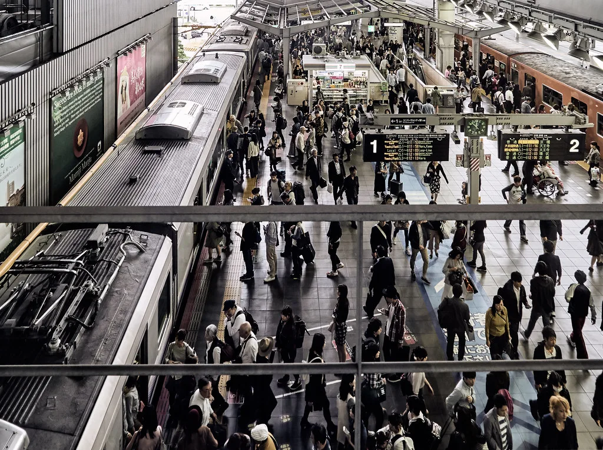

추석 열차 예매 시작…SRT·코레일 통합 첫 명절, '코레일+' 앱 하나로
한국철도공사가 9월 3일부터 추석 연휴 승차권 예매를 시작했다. 예매 대상은 9월 23일부터 27일까지 닷새간 운행하는 열차다. 올해는 수서고속철도(SRT) 운영사가 코레일로 통합된 뒤 처음 맞는 명절이라, 그동안 앱 두 개로 나뉘어 있던 고속철도 예매 창구가 '코레일+' 앱과 홈페이지 하나로 합쳐졌다. 수서역에서 출발하는 열차도 이제는 별도 앱이 아니라 코레일에서 발권한다.
예매는 대상별로 날짜가 나뉜다. 교통약자와 국가유공자 등을 위한 사전예매는 9월 3일과 4일 오전 9시부터 오후 3시까지 진행된다. 모든 국민이 참여할 수 있는 일반예매는 9월 7일부터 11일까지 오전 7시부터 오후 1시까지 진행되며, 경부 방면과 호남 방면 등 노선 계열에 따라 예매일이 나뉜다. 이용객은 출발역과 목적지에 맞는 예매 날짜와 시간을 코레일 안내를 통해 미리 확인해야 한다. 예매하고 남은 좌석은 9월 11일 오후 3시부터 일반 판매로 풀린다.

달라진 점도 있다. 2026년 추석부터는 임산부가 교통약자 사전예매 대상에 새로 포함됐다. 예매는 전화나 창구 대신 앱과 홈페이지를 통한 비대면 방식이 중심이며, 명절 승차권은 가는 편과 오는 편을 함께 예매하도록 운영된다. 사전예매에서 확보되지 않은 좌석이 일반예매 물량으로 넘어가는 구조여서, 두 차례 예매 기회를 모두 활용하는 편이 유리하다. 다만 통합 이후 처음 치르는 명절 예매인 만큼 시작 직후 접속이 몰리면서 대기 시간이 길어질 수 있다.
이용자들이 유의할 점도 있다. 예매를 시작하고 결제 시한 안에 결제를 마치지 않으면 좌석 예약이 자동으로 취소된다. 명절 기간에는 승차권 반환 수수료가 평소보다 높게 매겨지므로, 일정을 확정한 뒤 예매하는 편이 낫다. 원하는 시간대 좌석을 구하지 못했다면 잔여석 판매 시점이나 출발 직전 반환되는 좌석을 노리는 것도 방법이다.

정부와 코레일은 추석 연휴를 앞두고 임시열차 증편, 고속버스 증차, 고속도로 통행료 면제 등 특별교통대책을 준비하고 있다. 귀성과 귀경 수요가 특정 시간대에 쏠리는 것을 막기 위해 예매 분산과 열차 증편에 초점을 맞춘다. 온라인 예매가 자리를 잡으면서 명절마다 되풀이되는 '광클' 경쟁도 이번 예매에서 다시 벌어질 것으로 보인다.
철도 통합은 요금 체계와 멤버십, 예매 시스템을 하나로 맞추는 과정을 거치고 있다. 이용객 입장에서는 앱을 하나만 쓰면 되고 잔여석과 환승 조회가 편해진다는 장점이 있지만, 초기에는 시스템 안정화 과정에서 오류나 혼선이 생길 수 있다는 우려도 나온다. 코레일은 취약계층을 위한 전화예매와 창구 예매도 함께 운영해 디지털 격차를 보완한다는 방침이다.
명절 승차권 예매는 매년 좌석 확보 경쟁이 치열한 만큼, 이용객 사이에서는 여러 대안이 자리 잡고 있다. 열차표를 구하지 못한 경우 고속·시외버스나 승용차 이용으로 분산되고, 연휴 기간 국토교통부와 코레일은 고속도로 상황과 열차 혼잡도를 실시간으로 안내한다. 정부는 올해도 특별교통대책 기간을 정해 안전 점검과 수송력 확대에 나설 예정이며, 자세한 연휴 교통 대책은 추석이 가까워지면 별도로 발표된다.